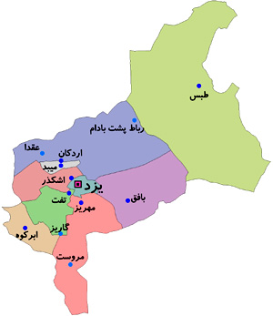
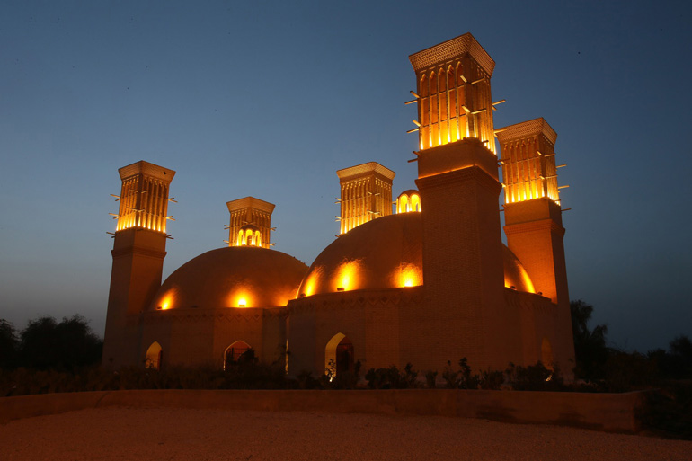
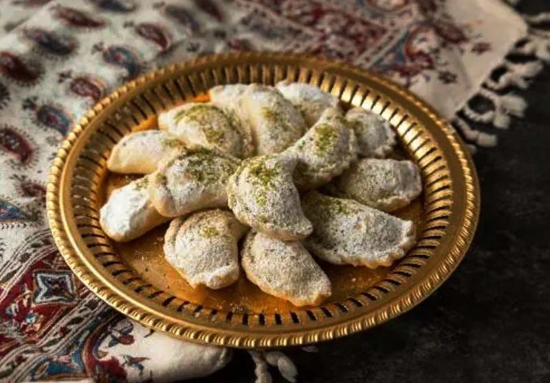
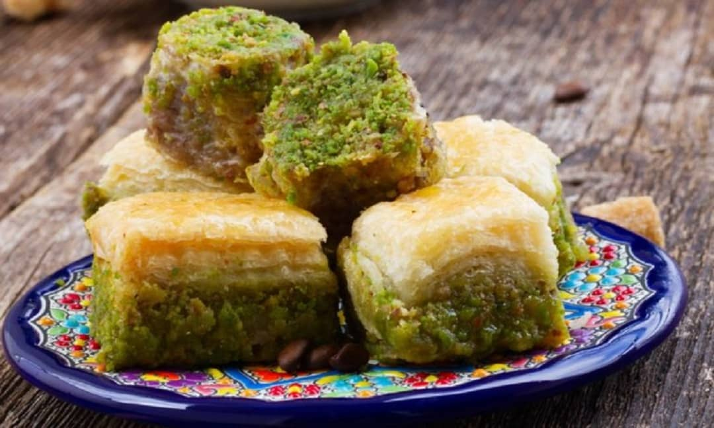
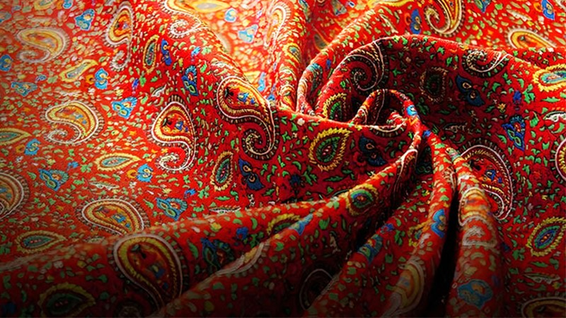

نخستین شهر خشت خام جهان – حسینیه ایران و شهر بادگیرها
یزد (شهر دوچرخهها)
۷۶٬۴۶۹ کیلومتر مربع
≈ ۱٫۳۸۴ میلیون نفر
حسینیه ایران، شهر بادگیرها
واژه یزد ریشه در «یزش» به معنای ستایش و نیایش دارد. این سرزمین مهد آیین زرتشتی و همزیستی مسالمتآمیز ادیان بوده است. بافت تاریخی یزد با کوچههای آشتیکنان و دیوارهای کاهگلی، یکی از دستنخوردهترین بافتهای مسکونی تاریخ ایران است که در فهرست میراث جهانی یونسکو ثبت شده است.

نمایش یزد روی نقشهیزد نماد غلبه انسان بر شرایط سخت اقلیمی است. اختراع «قنات» برای انتقال آب و ساخت «بادگیرها» برای تهویه طبیعی هوا بدون انرژی، یزد را به قطب معماری پایدار جهان تبدیل کرده است. این استان علیرغم آبوهوای گرم و خشک، از دیرباز قطب صنعتی و تجاری مهمی در مسیر جاده ابریشم بوده است.

از شیرینیهای بینظیر مانند قطاب و باقلوا تا ترمه و زریبافیهای ظریف؛ یزد تجربهای متفاوت از هنر، تاریخ و طعم را به مهمانان خود هدیه میدهد.

قطاب
باقلوا
ترمهشهر خشت و گل با کوچههای پرپیچوخم؛ ثبت جهانی ۲۰۱۷.
با دو منارهی بلند و کاشیکاری فیروزهای از شاهکارهای معماری ایران.
دارای یکی از بلندترین بادگیرهای خشتی جهان، حدود ۳۳ متر.
میدان و تکیه و بازار با سهردیف ایوانهای آرشهای، بهویژه شبانگاه.
آتش بهرام، نگهدارندهی آتشی که بنا بر روایت زرتشتیان قرنهاست روشن مانده.
قناتهای ایرانی، نمونهای از مدیریت آب در کویر؛ بخشی از ثبت جهانی قناتها.
ورزش باستانی ایرانی در گودهای قدیمی با ضرب و زنگ و مرشد.
روستای خشتی خرانق و زیارتگاه کوهستانی چکچک زرتشتیان.
یزد را «شهر شیرینیها» هم میگویند؛ قطاب با فرآوردههای بادام و گلاب از سوغاتهای پرطرفدار آن است.